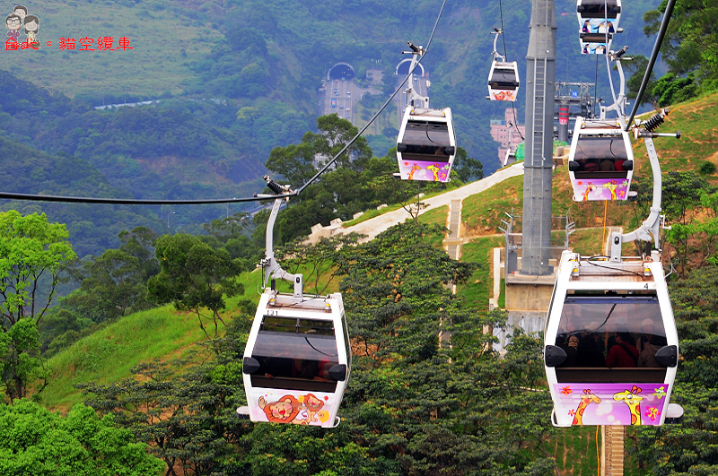
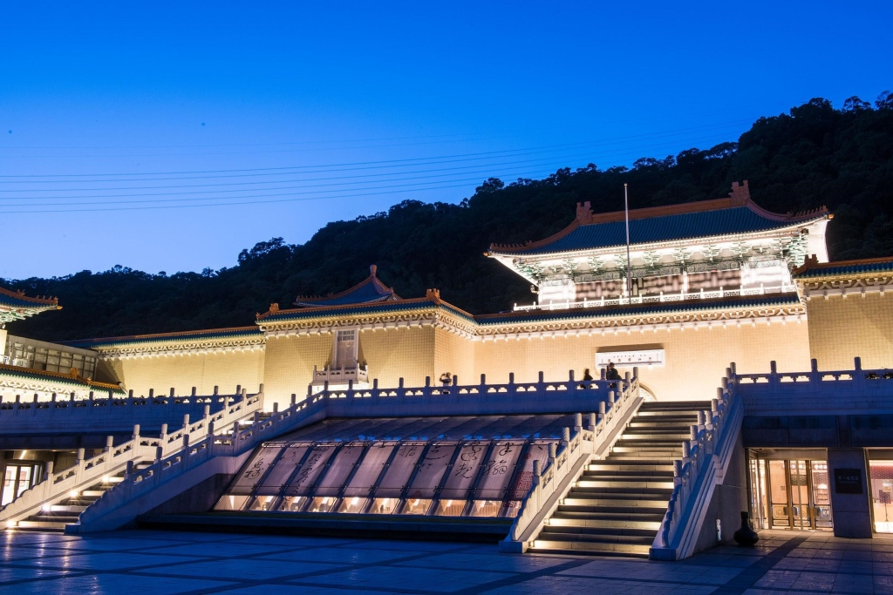
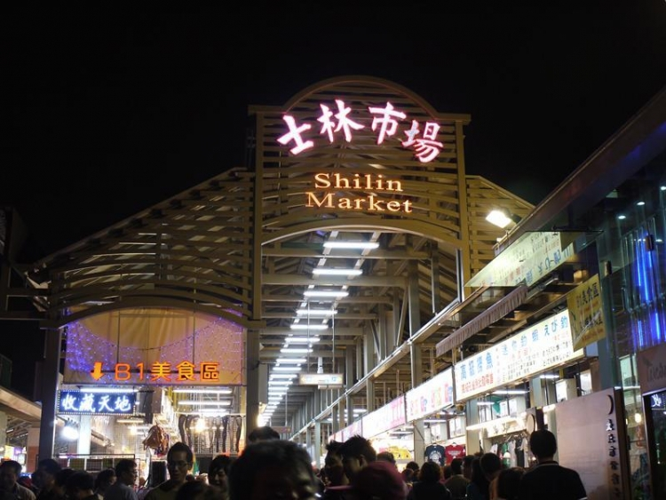
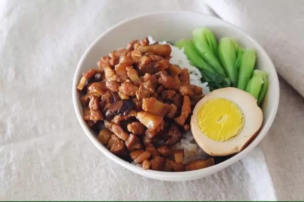

Explore Taipei Near Howard Civil Service International House
Welcome to Taipei
Taipei is Taiwan's economic, political, and cultural centre. It is a modern cosmopolitan metropolis with a lively and diversified face, filled with exuberance.
What to Do?
Maokong Gondola
With a total length of 4.03 kilometers, the Maokong Gondola is the first gondola system in Taipei City. One-way travel time is about 20 to 30 minutes. The gondola has four stops: Taipei Zoo Station, Taipei Zoo South Station, Zhinan Temple Station, and Maokong Station. To ride, take the Wenhu Line to Taipei Zoo Station and walk to the Maokong Gondola terminal.
National Palace Museum
This world-renowned museum houses over 600,000 priceless Chinese artifacts, spanning nearly 5,000 years of history. Many items come from the imperial collections dating back to the Song Dynasty.
What to See?
Taipei 101

Located in Taipei’s finest district, TAIPEI 101 is an architectural marvel and a symbol of the city. Visit the observation deck for a panoramic view or explore the shopping mall and fine dining options inside.
Shilin Night Market
One of Taipei’s most popular night markets, Shilin offers a wide range of authentic Taiwanese street foods and local delicacies. The market dates back to the 19th century and is a must-visit for food lovers.
Where to Eat?
My Stove
A Michelin Bib Gourmand restaurant serving refined Taiwanese cuisine in a vintage atmosphere.
Address: No. 9-1, Lane 100, Songjiang Road, Zhongshan District, Taipei City 10491